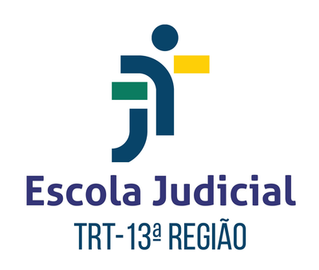
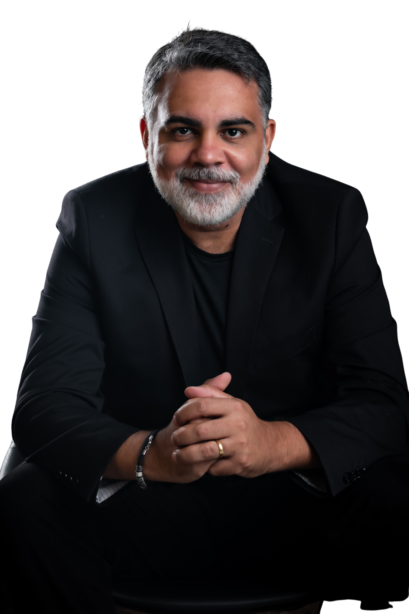
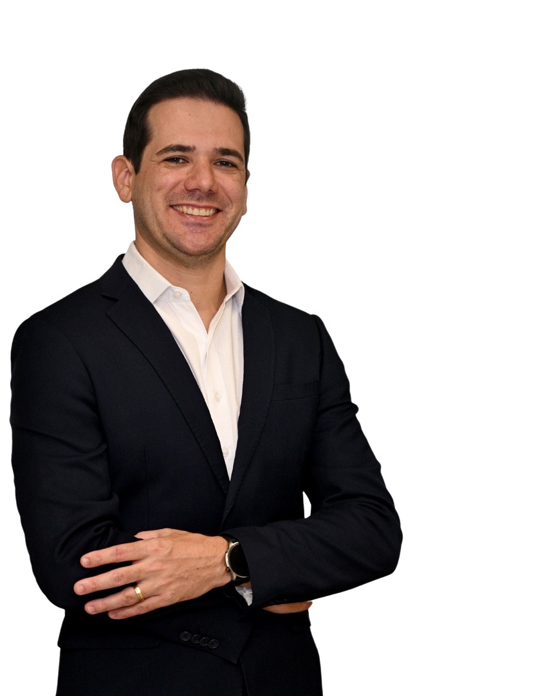
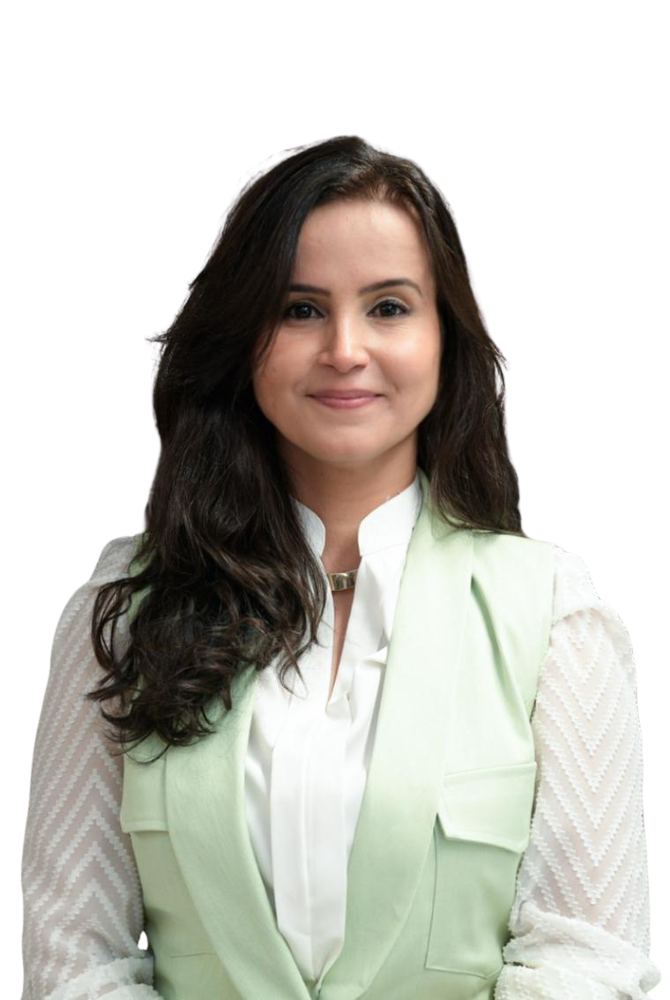
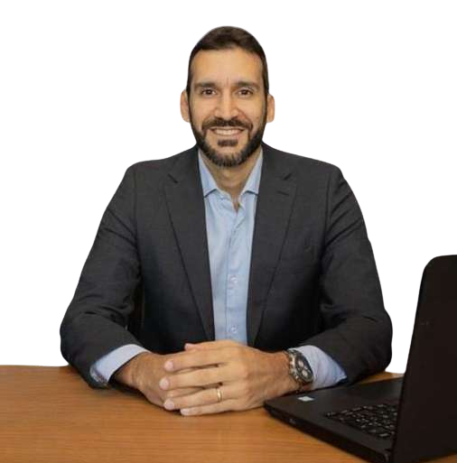
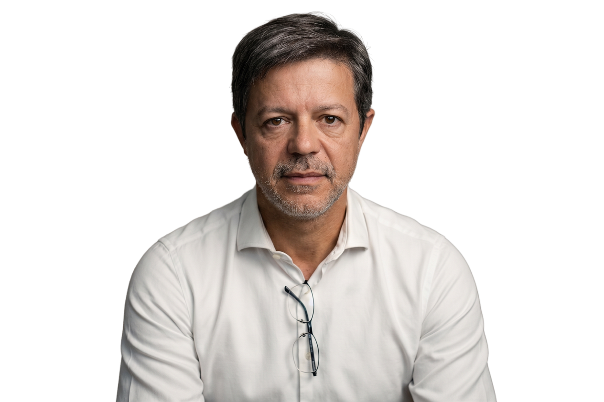

Pessoas (Cultura)
Nossos programas desenvolvem competências comportamentais, promovem a colaboração em equipes e preparam líderes para inspirar e engajar com propósito.
O novo DNA do serviço público
Palestras, trilhas de aprendizagem e cursos que preparam lideranças e equipes para um serviço público mais humano, inovador e digital.
inovar é servir com propósito
Nossa missão é unir Pessoas, Inovação e Transformação Digital para fortalecer lideranças, desenvolver a gestão pública e ampliar o valor entregue à sociedade.
Nossos programas desenvolvem competências comportamentais, promovem a colaboração em equipes e preparam líderes para inspirar e engajar com propósito.
Apoiamos a liderança e equipes na inovação no setor público, fortalecendo laboratórios e desenvolvendo competências para gerar valor público com criatividade e colaboração.
Apoiamos pessoas e equipes a aproveitar o potencial da transformação digital, repensando formas de trabalho e usando inteligência artificial e automação como aliadas estratégicas.
Capacitações realizadas e atestadas por instituições da Justiça brasileira.

Acreditamos em pessoas que se desenvolvem, lideram e transformam o serviço público. As nossas trilhas são um caminho para isso.
Gestores, sucessores e equipes que inspiram e transformam o serviço público.
Ver trilha 02Agentes e laboratórios que transformam desafios reais em soluções de valor.
Ver trilha 03Tecnologia, IA e Microsoft 365 como aliadas da inteligência humana.
Ver trilha 04Cada desafio é único. Cada solução também.
Solicitar propostaCatálogo completo organizado por área de atuação. Clique em qualquer card para ver os detalhes.
Do controle à confiança: desenvolva gestores, sucessores e equipes com clareza, diálogo e propósito.
Metodologias que resolvem problemas reais — longe das oficinas decorativas.
A tecnologia como ponte para aproximar o servidor do cidadão. O digital não substitui pessoas: potencializa.
O nosso papel é oportunizar experiências de aprendizagem que potencializem líderes e equipes rumo ao novo DNA do serviço público.
Atua há mais de 10 anos no desenvolvimento de pessoas, comunicação eficaz, cultura organizacional e formação de lideranças no serviço público.
Pedagoga pela UnB, pós-graduada em Gestão de Pessoas e mestre em Gestão Estratégica de Organizações, possui sólida experiência em facilitação e profundo conhecimento sobre aprendizagem do adulto. Construiu sua trajetória no Departamento de Polícia Federal, TJDFT e STJ, onde atuou como gestora da área de Desenvolvimento Gerencial.

Atua há mais de 12 anos como facilitador, palestrante e instrutor em programas formativos para diversos órgãos do Poder Judiciário. É mestrando em Gestão Pública pela UnB e especialista em Inovação em Tecnologias Educacionais, com formações em Negociação pela FGV, Design Thinking, Gestão da Mudança e Gestão de Equipes Híbridas.
Foi condecorado com a Medalha do Pacificador e recebeu o Prêmio Ser Humano ABRH-DF 2023 pelo case Comunidade STJ Officeless. Criador do Canvas de Negociação Criativa, conduz palestras e capacitações para gestores estratégicos do STJ.

Atua há mais de 10 anos no desenvolvimento de pessoas, cultura organizacional, inovação e formação de lideranças humanizadas. Conecta neurociência, mindfulness e inteligência emocional para apoiar magistrados e servidores na construção de ambientes mais saudáveis, produtivos e colaborativos.
Facilitador especializado em inteligência emocional, laboratorista do STJ LAB e facilitador certificado em Design Thinking, Estruturas Libertadoras e metodologias colaborativas.

Gestora pública e líder em educação corporativa e inovação no Judiciário. Especialista em Administração pela FGV, com formação executiva.
No STJ, dirigiu o Centro de Formação e Gestão Judiciária e liderou planejamento educacional e desenvolvimento de competências.

Especialista em Liderança na Transformação Digital, atua na qualificação de lideranças e equipes para os desafios da transformação digital no setor público. Sua abordagem une tecnologia, inovação organizacional e desenvolvimento humano, com foco em adaptações sustentáveis ao contexto de cada organização.
Membro da Comissão de Inteligência Artificial do STJ, integrou a Assessoria de Inteligência Artificial e atualmente atua em gabinete de Ministro, destacado para projetos de inovação e inteligência artificial.

Bacharel em Direito, administrador e cientista de dados, com mais de 30 anos no Poder Judiciário, no STJ.
Liderou projetos de modernização premiados nacionalmente e é especialista em Ambidestria Organizacional: entregar o agora construindo o amanhã.
Secretário do Laboratório de Inovação do STJ, o STJ LAB.
Facilitador que usa criatividade e dinâmicas gamificadas para romper a resistência à mudança, com trajetória na gestão de pessoas e em projetos governamentais de inovação.
"Importante ter sido ministrado por servidores públicos. Em outros cursos, para empresas privadas, o conteúdo acaba não se aplicando ao nosso dia a dia. Aqui, foi diferente."
Curso muito importante, não só para o trabalho, mas para a vida pessoal. Este curso abriu meus olhos e já estou repassando para os servidores.
A qualidade das exposições e o notável saber dos palestrantes foram, sem dúvida, pontos altos do evento. Aprendi muito com o conteúdo apresentado.
O curso superou as expectativas e os formadores demonstraram domínio do conteúdo, não deixaram pergunta sem resposta e proporcionaram a imersão no conteúdo.
Estamos construindo uma rede de colaboração com instituições e profissionais que acreditam em um novo DNA do serviço público, mais humano, inovador e digital.
Nosso propósito é inovar, de forma transparente e real, o setor público brasileiro.
Quer fazer parte da Rede Inova Pública? Entre em contatoConte sobre o desafio do seu órgão. Retornamos com uma proposta adaptada ao seu contexto, formato e carga horária.